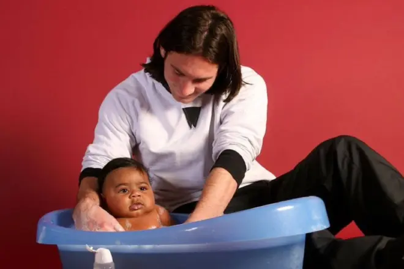

Hours before the 2026 FIFA World Cup Final between Argentina and Spain, a photograph went viral once again. It shows a 20-year-old Lionel Messi bathing a baby. That baby is Lamine Yamal. The photo is real, the story is verified, and the timing is almost too perfect to be believed.
For years, fans assumed the image was AI-generated or a Photoshop job. It looked too surreal — the greatest player of all time cradling the teenager who would become his opponent on football's biggest stage. But the photograph is 100% authentic, and the story behind it is one of the most remarkable coincidences in sports history.
The photograph was taken in December 2007 by acclaimed photographer Joan Monfort. It was part of a charity calendar organized by UNICEF and the FC Barcelona Foundation. The concept was simple: local families entered a raffle for a chance to be photographed with Barcelona players for a fundraising calendar.
Lamine Yamal's parents were among the families selected. Their baby son — just a few months old, having been born in July 2007 — was paired with a young Lionel Messi, who was already emerging as Barcelona's next global superstar at age 20.
The charity calendar project invited families from the Barcelona area to enter a raffle. Winners would have their children photographed alongside first-team Barcelona players. The images were intended for a limited-edition calendar sold to raise funds for UNICEF programs and the FC Barcelona Foundation's community work.
Joan Monfort, who shot the session, explained that the pairings were done randomly. Nobody could have predicted that the baby placed in Messi's arms would grow up to become one of the most exciting young players in world football — or that the two would meet again on the biggest stage in the sport.
When the photo was taken in December 2007, Lionel Messi was 20 years old and in the middle of his breakthrough season at Barcelona. He had already won his first Ballon d'Or (2009 would bring the second), and the football world was beginning to understand that they were witnessing something extraordinary.
He was fast, he was devastating, and he was about to become the best player the world had ever seen. But in that moment — holding a stranger's baby for a charity photoshoot — he was just a young footballer doing his part for a good cause.
Lamine Yamal was born on July 13, 2007, in Barcelona. He joined La Masia — Barcelona's famed youth academy — as a child and quickly rose through the ranks. By the time he made his first-team debut in 2023, at just 15 years old, he was already being tipped as the next great Barcelona talent.
Yamal has admitted that he didn't even know the photograph existed for many years. It was his father who eventually told him about the photoshoot. Once social media rediscovered the image, it spread like wildfire — and the story became one of the most shared football narratives of the decade.
Now 19 years old, Yamal faces Messi in the 2026 World Cup Final. The baby from the charity calendar has become Spain's most dangerous attacker. The young Barcelona player holding him has become the greatest footballer of all time. And fate has brought them together one more time.
Although Messi has never publicly commented on that specific 2007 photoshoot, he has praised Yamal on several occasions. The Argentina captain has described the Spanish winger as one of the young players who reminds him most of his own early years at Barcelona.
Messi has already called Yamal one of the best players in the world despite his age — a remarkable compliment from a man who has seen (and beaten) every generation of talent for two decades.
In an era of AI-generated images and deepfakes, the Messi-Yamal photo stands as a reminder that reality can be stranger than fiction. The internet's initial reaction — disbelief — is understandable. The image looks almost too perfectly timed, too poetically constructed to be real.
But it is real. And that's what makes it so powerful.
The photograph captures something rare in football: a genuine, unscripted connection between two generations of greatness. Messi didn't know who that baby would become. Yamal's parents didn't know they were handing their son to the greatest player who ever lived. And Joan Monfort didn't know he was creating one of the most iconic sports photographs of the century.
The 2026 FIFA World Cup Final brings together two footballing giants. Argentina, led by 38-year-old Lionel Messi in what could be his final World Cup match, against Spain, powered by the electrifying Lamine Yamal.
Nineteen years after a charity photoshoot in Barcelona, the story has come full circle. One photograph connected their past. Now, 90 minutes on the pitch could define their legacy.
Check our free daily football predictions for World Cup Final analysis and betting tips.
Generate optimized accumulator combinations from today's AI-powered predictions. Set your target odds and get instant ticket suggestions.
Free Ticket Builder →